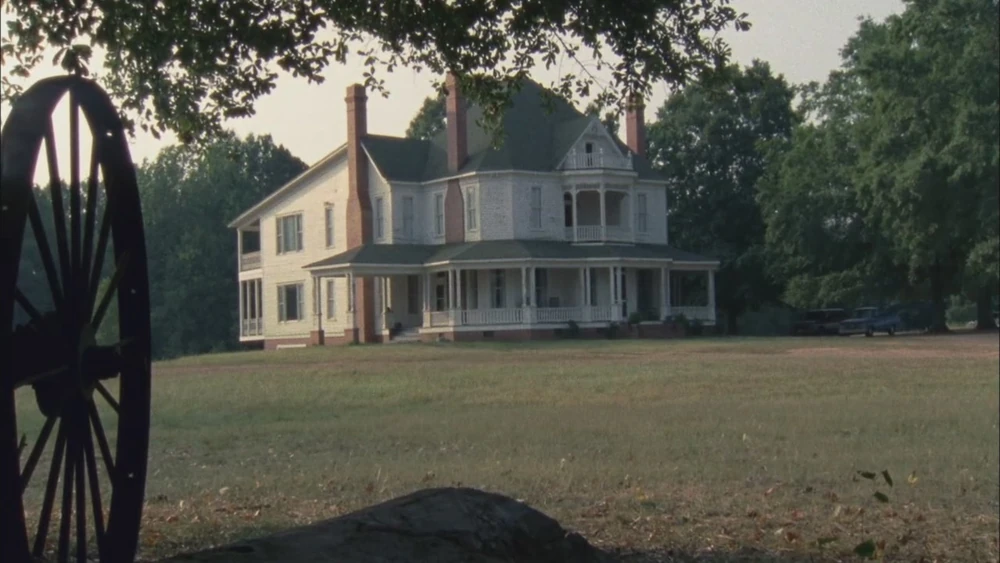

En la Granja Greene vivían Hershel Greene el padre y sus hijas Beth Greene yMaggie, y algunos amigos, era un sitio tranquilo donde tenían comida y agua para mucho tiempo, un día llego otro grupo llamado Supervientes de Atlanta con Carl Grimes con una herida de bala por suerte el dueño de la granja era veterinario y le pudo quitar la bala.